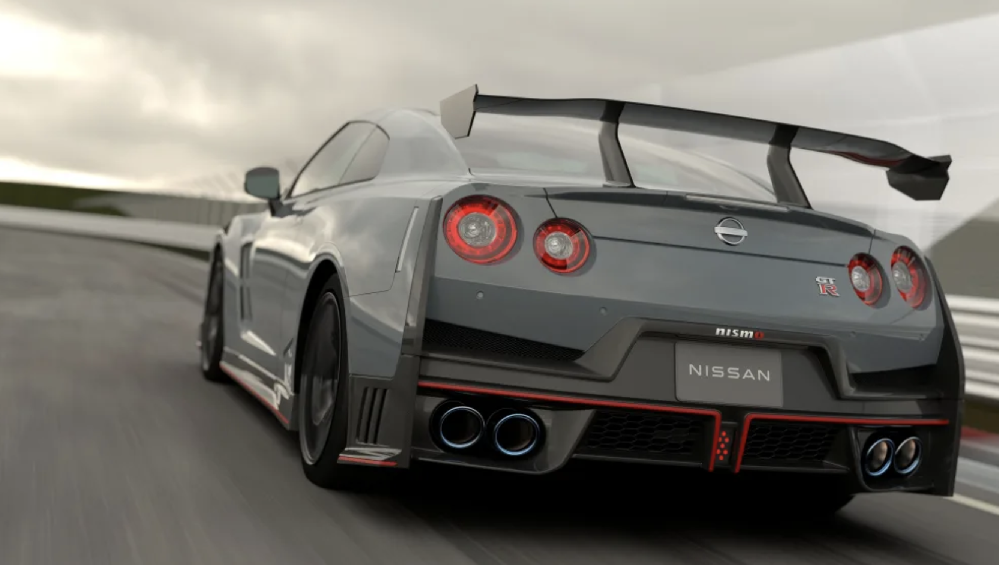

Novo Nissan GT-R 2024 recebe atualização mais dramática em 7 anos com novo visual e aerodinâmica

O Nissan GT-R Nismo 2024 é um carro esportivo de luxo produzido pela Nissan. É o modelo mais potente da linha GT-R, com motor V6 biturbo de 3,8 litros, que gera 600 cv de potência e 63,4 kgfm de torque. O modelo é equipado com câmbio automático de dupla embreagem de sete marchas e tração integral. O GT-R Nismo 2024 é o modelo mais potente da linha GT-R, com motor V6 biturbo de 3,8 litros, que gera 600 cv de potência e 63,4 kgfm de torque. O modelo é equipado com câmbio automático de dupla embreagem de sete marchas e tração integral.
Depois de desaparecer misteriosamente do mercado dos EUA para o ano do modelo 2022, o GT-R da Nissan também reapareceu misteriosamente para 2023 completamente inalterado. Agora está de volta para 2024, com actualizações tanto cosméticas como orientadas para o desempenho em toda a gama. Revelado no Salão Automóvel de Tóquio 2023, é o ajuste mais dramático ao supercarro da Nissan desde o seu facelift de 2017. Se isto parece ter sido há muito tempo, é, mas o GT-R também tem andado aos pontapés desde o ano do modelo 2009. Feliz 15º aniversário GT-R.

Mantendo a filosofia da Nissan de melhorias pequenas, mas constantes, o grande kahuna GT-R Nismo é ainda mais potente com a adição de um diferencial de deslizamento limitado dianteiro. Complementando isso, há novas fáscias dianteiras e traseiras baseadas no design dos GT-R Premium. Mas o Nismo vai além, adicionando um lábio dianteiro, difusor traseiro maciço e canards. Uma nova asa traseira com pescoço de cisne fornece 10% mais área de superfície para downforce.
O GT-R Nismo 2024 também recebeu uma nova suspensão dianteira com braços inferiores mais longos e uma nova barra estabilizadora. A suspensão traseira também foi redesenhada para melhorar a rigidez e a estabilidade. A Nissan também afirma que o GT-R Nismo 2024 é mais leve, mas não especifica quanto. O GT-R Nismo 2024 também recebeu uma nova suspensão dianteira com braços inferiores mais longos e uma nova barra estabilizadora. A suspensão traseira também foi redesenhada para melhorar a rigidez e a estabilidade. A Nissan também afirma que o GT-R Nismo 2024 é mais leve, mas não especifica quanto.